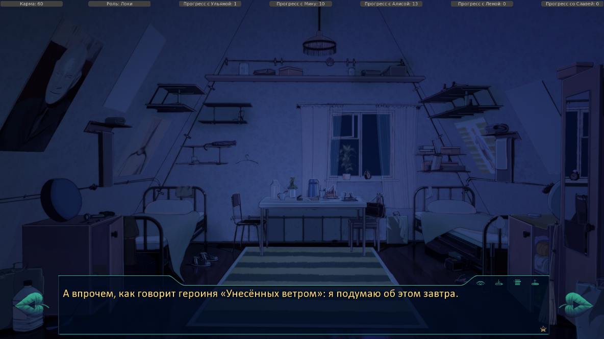

7 дней лета, билд 0.16b (Ювао-демо) - Обновление от 07.03
Страница 1 из 2 • 1, 2 
7 дней лета, билд 0.16b (Ювао-демо) - Обновление от 07.03
автор 7dl-kun в Сб 7 Мар 2015 - 0:57
Кроме того интегрирована ЮВАО часть в мод - только для Дрища (в д.1 бежим за тенью на площадь и вечером обязательно болтаем с Леной (опция "сменить тему"), в д.2 никуда на свиданки не ходим, в д.3 сычуем на танцах, отшиваем ОД, получаем выход на кошочку).
Обновлена скриптовая часть.
Скрипты+арты: rghost.ru/8vgCL5Ssz
хотфикс1: rghost.ru/6lSgC52SF
Саунд-пак1: rghost.ru/8RH6KR8YJ
Саунд-пак2: rghost.ru/6LVhjg8Hs
Последний раз редактировалось: 7dl-kun (Ср 11 Мар 2015 - 16:50), всего редактировалось 5 раз(а)

7dl-kun- Находка для шпиона

- Сообщения : 3026
Дата регистрации : 2014-09-07
Откуда : здесь столько наркоманов?
Re: 7 дней лета, билд 0.16b (Ювао-демо) - Обновление от 07.03
автор Chess в Сб 7 Мар 2015 - 0:58

Chess- Находка для шпиона
- Сообщения : 3798
Дата регистрации : 2014-10-05
Откуда : Город на краю света
Re: 7 дней лета, билд 0.16b (Ювао-демо) - Обновление от 07.03
автор peregarrett в Сб 7 Мар 2015 - 1:09
Доступно только для Дрища - пролог "Все началось больше года назад"7dl-kun пишет:Кроме того интегрирована ЮВАО часть в мод (в д.1 бежим за тенью на площадь, в д.2 никуда на свиданки не ходим, в д.3 сычуем на танцах, отшиваем ОД, получаем выход на кошочку).

peregarrett- Находка для шпиона
- Сообщения : 3264
Дата регистрации : 2014-09-07
Возраст : 36
Re: 7 дней лета, билд 0.16b (Ювао-демо) - Обновление от 07.03
автор Chess в Сб 7 Мар 2015 - 1:12
Chess- Находка для шпиона
- Сообщения : 3798
Дата регистрации : 2014-10-05
Откуда : Город на краю света
Re: 7 дней лета, билд 0.16b (Ювао-демо) - Обновление от 07.03
автор 7dl-kun в Сб 7 Мар 2015 - 1:31
7dl-kun- Находка для шпиона
- Сообщения : 3026
Дата регистрации : 2014-09-07
Откуда : здесь столько наркоманов?
Re: 7 дней лета, билд 0.16b (Ювао-демо) - Обновление от 07.03
автор Chess в Сб 7 Мар 2015 - 3:17
Вот, вот она, точка входа на технорут!
Chess- Находка для шпиона
- Сообщения : 3798
Дата регистрации : 2014-10-05
Откуда : Город на краю света
Re: 7 дней лета, билд 0.16b (Ювао-демо) - Обновление от 07.03
автор Arlien в Сб 7 Мар 2015 - 18:09
- Таки вот:
Вы, товарищ автор, давеча обмолвились, что хотите, "как у Леночки"... В смысле "шоб продирало". Понятно, что ключевое слово - "продирало", но меня цепанула именно "Леночка", и я начал анализировать.
Чем по факту отличаются бэды Ун и Ми?
Тем, что в случае Ун, скажем так, "ключевое событие" происходит непосредственно на руках у Семена и на глазах у читателя, в случае же с Ми - за кадром и вообще "кучу лет назад" по местному таймлайну.
И извлечь из доджливой, промозглой меланхолии второго случая достаточно мощный эмоциональный всплеск довольно нетривиальная задача.
Если спросите меня - оно и хорошо, кмк, не везде нужны продиралки насквозь, та же смертная меланхолия может быть равноценна по значимости.
Но если хочется все же засадить читателю в печонку... "Как в Лена-руте", да?.. у меня в голове эта аналогия крутилась-крутилась - и состыковалась с реалиями Мику-концовок.
Семен ведь по ходу хаба "Мерзну" постепенно вспоминает визиты Мику.
Тогда, возможно, предателю с зеленым флагом стоит просто дать последний флешбэк? С тем самым "ключевым событием"?..
Arlien- Людовед

- Сообщения : 1322
Дата регистрации : 2014-09-08
Re: 7 дней лета, билд 0.16b (Ювао-демо) - Обновление от 07.03
автор 7dl-kun в Сб 7 Мар 2015 - 18:44
- Спойлер:
Вообще, вся вилка под эгидой как раз "НИДОЖДАЛАСЬ!", это и должно было внушить читателю пару кило депрессивных переживаний... Ну, как оказалось, недостаточно внятно внушило. Жаль.
А "ключевое событие" в данном случае - 20.06.1991 года... Не знаю. Угробить Мику на глазах у ГГ. Не слишком жестковато?
Nevermind, я уже пишу. Получается душувынимающе. Ну да сам хотел.
7dl-kun- Находка для шпиона
- Сообщения : 3026
Дата регистрации : 2014-09-07
Откуда : здесь столько наркоманов?
Re: 7 дней лета, билд 0.16b (Ювао-демо) - Обновление от 07.03
автор Ленивый бегун в Вс 8 Мар 2015 - 0:00
Ну не знаю, кого как, а меня пропёрло - аж коллеги выясняли вчера, что у меня в жизни случилось - читал в рабочее время в офисе...7dl-kun пишет:это и должно было внушить читателю пару кило депрессивных переживаний... Ну, как оказалось, недостаточно внятно внушило. Жаль.
От себя добавлю ма-а-ленькое пожелание по Мику-DJ:
- Спойлер:
В концовке с посещением лагеря в Тверской области ("Волга", я так понял) неплохо бы для особо одарённых дополнительно намекнуть, что все-все остальные посетители - это не двинутые на голову читатели "Бесконечного лета", а другие Семёны из этого энда. Лично я в этом странном заблуждении про читателей-почитателей находился, пока не прочитал пару постов Arlien'а.
Знаю, глупо выглядит, но могут ведь найтись и другие подобные высокоинтеллектуальные личности...
Повторюсь, я не сомневаюсь, что всё можно решить одним лёгким намёком.
EDIT:
Как всегда, ждём с нетерпением!7dl-kun пишет:я уже пишу.

Ленивый бегун- Сыч

- Сообщения : 57
Дата регистрации : 2015-02-02
Re: 7 дней лета, билд 0.16b (Ювао-демо) - Обновление от 07.03
автор 7dl-kun в Вс 8 Мар 2015 - 0:28
В 16б перепиленный бэд уже есть. Не знаю кому как, но лично мне новый бэд царапает куда больнее предыдущего. (не хвалюсь, просто говорю как сам чувствую).Ленивый бегун пишет:
Как всегда, ждём с нетерпением!
Насчёт намёка мысль разумная. Но уже неактуальная.
7dl-kun- Находка для шпиона
- Сообщения : 3026
Дата регистрации : 2014-09-07
Откуда : здесь столько наркоманов?
Re: 7 дней лета, билд 0.16b (Ювао-демо) - Обновление от 07.03
автор Arlien в Вс 8 Мар 2015 - 14:44
Очень плохая концовка, товарищ автор. Очень плохая... В этот раз - в хорошем (насколько это слово тут применимо) смысле.
- И штатная вычитка:
1160 – двойной пробел после «нет»
1222 – лучше просто «…будто выключило. Пришел в себя…»
1227 – тут либо «не переставшая быть прекрасной», без менее, либо «не ставшая менее»
1228 – «начинатЬся»
1243 – строго говоря, это не по части вычитки, но, может быть, стоит заменить «пучины депрессии» на синоним или аналог? «Депрессия» - это слово такое… Потасканное, знаете. Несчастный медицинский термин, попавший в безжалостные руки шулеров и эмо-девочек. Не место ему тут, как мне кажется. Плохо оно описывает гребаный коллапс личности, угрожавший Семену.
1244 – «подсознаниЯ»
1277 – «удач»? Выражение или «и» не хватает?
1325 – «вцепилСЯ» и «повис»
1329 – «и» после «о траву» треба заменить на запятую
1361 – «заставиТ»
1380 – запятая после «сувенирщины»
1396 – на «головЫ»
1514 – либо «мало удивительного в том», либо просто «неудивительно»
1527 – «все ТО же» - число среднего рода же
1530 – «три росчерка, одна загогулинка» надо в кавычки взять, «синтезаторЫ»
1556 – «севернЫЕ»?..
1576 – на какие дистанции?..
1588 – либо «привычно чувствовал», либо «привычно – идиотом», с тире
1601 – не понял конца предложения. Это «здание» «рассыпалось уступами»? Тогда «рыссыпавшЕмУся»
1643 – а, тут Ленфаг сдавал уже на вики – «подхватилИ»
1672 – либо «решиВ», либо «И начал»
1673 – лишняя запятая
1679-1681 – мне кажется или эыксклюзивной фамилией щеголял локи, а не герк?..
1755 – тоже репортили, но на всякий пожарный - «и» лишняя в конце
1859 – «моЙ»
1887 – «в голоВЕ»
Arlien- Людовед
- Сообщения : 1322
Дата регистрации : 2014-09-08
Re: 7 дней лета, билд 0.16b (Ювао-демо) - Обновление от 07.03
автор 7dl-kun в Вс 8 Мар 2015 - 15:34
7dl-kun- Находка для шпиона
- Сообщения : 3026
Дата регистрации : 2014-09-07
Откуда : здесь столько наркоманов?
Re: 7 дней лета, билд 0.16b (Ювао-демо) - Обновление от 07.03
автор DJ_DAD в Вс 8 Мар 2015 - 23:51

DJ_DAD- Сыч
- Сообщения : 24
Дата регистрации : 2015-03-02
Возраст : 24
Re: 7 дней лета, билд 0.16b (Ювао-демо) - Обновление от 07.03
автор Ленивый бегун в Пн 9 Мар 2015 - 15:53
- proofread-mi_dj_7dl-016b.txt:
0513 Цоя и Высоцкого - а ведь они оба живы сейчас (Высоцкий умер в 1980-м году. Ошибка ГГ?)
0527 место в сундуче начали ("сундуке")
0527 какими-то прозрачными, маслянистыми жидкостями (запятая лишняя)
0724 Так мы и так вместе сейчас (много "так")
1089 возвращаться в союз ("Союз" с заглавной)
1244 моей возлюбленной шуточками подсознание было назначено (вероятно, "подсознания")
1361 заставить чуть сморщиться очаровательными носик (вероятно, "заставит чуть сморщиться очаровательный носик"?)
1388 а искусанные[] чтобы не разреветься, губы (кажется, нужна запятая)
2084 Касание опять пришлось на порез (Похоже, осталось из первоначального варианта - здесь прошло уже два месяца, должно было зажить)
Ленивый бегун- Сыч
- Сообщения : 57
Дата регистрации : 2015-02-02
Re: 7 дней лета, билд 0.16b (Ювао-демо) - Обновление от 07.03
автор Arlien в Пн 9 Мар 2015 - 16:52
Судя по всему, если и можно, то тут никто не знает как, потому что бог знает, куда реночка записывает логи прочтенного.можно ли сохранить "историю просмотренного
Но - просто если вдруг что - в настройках вроде можно включить возможность промотки любого текста, не только прочтенного.
Arlien- Людовед
- Сообщения : 1322
Дата регистрации : 2014-09-08
Re: 7 дней лета, билд 0.16b (Ювао-демо) - Обновление от 07.03
автор 7dl-kun в Пн 9 Мар 2015 - 20:25
Привет, спасибо за вычитку.Ленивый бегун пишет:Наконец-то собрался с душевными силами после прочтения (а это было непросто, замечу!) и предлагаю немного вычитки:Чуть позже будет вычитка ещё по нескольким файлам, у меня поднабралось.
- proofread-mi_dj_7dl-016b.txt:
0513 Цоя и Высоцкого - а ведь они оба живы сейчас (Высоцкий умер в 1980-м году. Ошибка ГГ?)
0527 место в сундуче начали ("сундуке")
0527 какими-то прозрачными, маслянистыми жидкостями (запятая лишняя)
0724 Так мы и так вместе сейчас (много "так")
1089 возвращаться в союз ("Союз" с заглавной)
1244 моей возлюбленной шуточками подсознание было назначено (вероятно, "подсознания")
1361 заставить чуть сморщиться очаровательными носик (вероятно, "заставит чуть сморщиться очаровательный носик"?)
1388 а искусанные[] чтобы не разреветься, губы (кажется, нужна запятая)
2084 Касание опять пришлось на порез (Похоже, осталось из первоначального варианта - здесь прошло уже два месяца, должно было зажить)
в 513 - гг шиза поправляет, так он да, ошибается. Остальное внесу.
7dl-kun- Находка для шпиона
- Сообщения : 3026
Дата регистрации : 2014-09-07
Откуда : здесь столько наркоманов?
Re: 7 дней лета, билд 0.16b (Ювао-демо) - Обновление от 07.03
автор DJ_DAD в Пн 9 Мар 2015 - 22:35
Я разобрался, всё проще чем казалось... При прохождении игра рядом со сценарием/текстом .rpy создаёт "тот самый лог" .rpyc. Итого, если удалить одни .rpy и поставить новую версию, то никаких конфликтов не возникает и остается память о прочитанном.Arlien пишет:
Судя по всему, если и можно, то тут никто не знает как, потому что бог знает, куда реночка записывает логи прочтенного.
DJ_DAD- Сыч
- Сообщения : 24
Дата регистрации : 2015-03-02
Возраст : 24
Re: 7 дней лета, билд 0.16b (Ювао-демо) - Обновление от 07.03
автор DJ_DAD в Пн 9 Мар 2015 - 23:30
- Скрин:

DJ_DAD- Сыч
- Сообщения : 24
Дата регистрации : 2015-03-02
Возраст : 24
Re: 7 дней лета, билд 0.16b (Ювао-демо) - Обновление от 07.03
автор DJ_DAD в Вт 10 Мар 2015 - 0:04
- Попытка повторить как было:
- локи-пойду-успокоиться-ответить-дать уйти-не понял-стоять-потребовать-спортплощадка-пнуть-помочь-взять ключи-подойти-похвалить-задержать-спросить-с Леной-Алиса-Стоянка-тех.Кружок-Муз.кружок-мед.пункт-муз.кружок(вступил)-спортплощадка(нарды)-с Мику-Улыбнуться-В клубе сидишь?-сам-пометить-поспорить-пропустить-играть-проиграть Лене-торт не спасти-Да в чем дело?----автоматом пляж.
Эх, нарвался на недоработку что описана на вики: "Исходные данные: Локи, 23 очка с Мику, в душевые кабинки к Славе и Алисе не лазил, бритвой ладонь не резал, с Мику переспал. По этому коду я будучи в полном порядке с Мику влетаю на ветку else"
DJ_DAD- Сыч
- Сообщения : 24
Дата регистрации : 2015-03-02
Возраст : 24
Re: 7 дней лета, билд 0.16b (Ювао-демо) - Обновление от 07.03
автор Гость в Ср 11 Мар 2015 - 2:36
Гость- Гость
Re: 7 дней лета, билд 0.16b (Ювао-демо) - Обновление от 07.03
автор peregarrett в Ср 11 Мар 2015 - 4:18
На другие - надо насоздавать себе проблем и героически их преодолеть. Вломиться не в ту кабинку в душе, распахать себе руку бритвой... И после этого заслужить второй танец, а дальше удачно/неудачно ото всех смыться.
По мне - так "Моя Мику" - самая мощная концовка. Причем там до последнего момента не понимаешь, это гуд или бэд! В общем, меня вывернуло и высушило, пойду восстанавливать слой циничного сала на сердце.
peregarrett- Находка для шпиона
- Сообщения : 3264
Дата регистрации : 2014-09-07
Возраст : 36
Re: 7 дней лета, билд 0.16b (Ювао-демо) - Обновление от 07.03
автор 7dl-kun в Ср 11 Мар 2015 - 10:54
Для плохой концовки кроме недостачи лп, нужно ещё и любой из "плохих" флагов акивировать по ходу пятого-шестого дня: позлить Славю/Алису/Лену, руку себе в д.5 порезать.Макс Ветров пишет:По Мику-эндингам: не могу никак выйти на бэд: все равно бросает на "Моя Мику", а если выбираю "Свалить", то концовка "Разбитая ламповость". Точно так же с ЛП>20 бросило на "Мою Мику", хотя должно было быть "И не мечтай". Что не так?
7dl-kun- Находка для шпиона
- Сообщения : 3026
Дата регистрации : 2014-09-07
Откуда : здесь столько наркоманов?
Re: 7 дней лета, билд 0.16b (Ювао-демо) - Обновление от 07.03
автор Гость в Вс 15 Мар 2015 - 3:17
Гость- Гость
Re: 7 дней лета, билд 0.16b (Ювао-демо) - Обновление от 07.03
автор 7dl-kun в Вс 15 Мар 2015 - 9:19
Недобор лп.Макс Ветров пишет:после турнира пошел в гости к Лене, а там никого
7dl-kun- Находка для шпиона
- Сообщения : 3026
Дата регистрации : 2014-09-07
Откуда : здесь столько наркоманов?
Re: 7 дней лета, билд 0.16b (Ювао-демо) - Обновление от 07.03
автор Гость в Вс 15 Мар 2015 - 10:20
Гость- Гость
Страница 1 из 2 • 1, 2